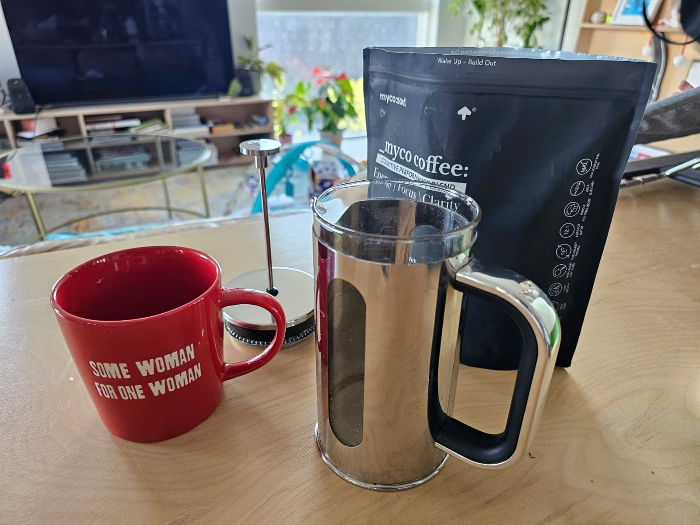
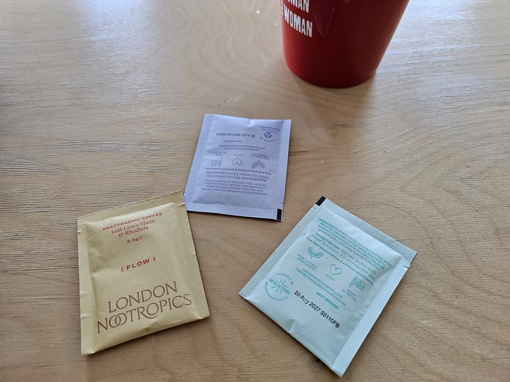
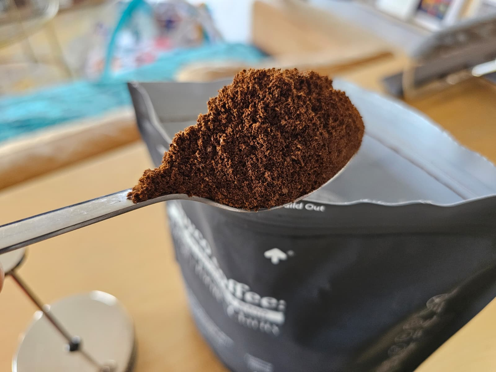
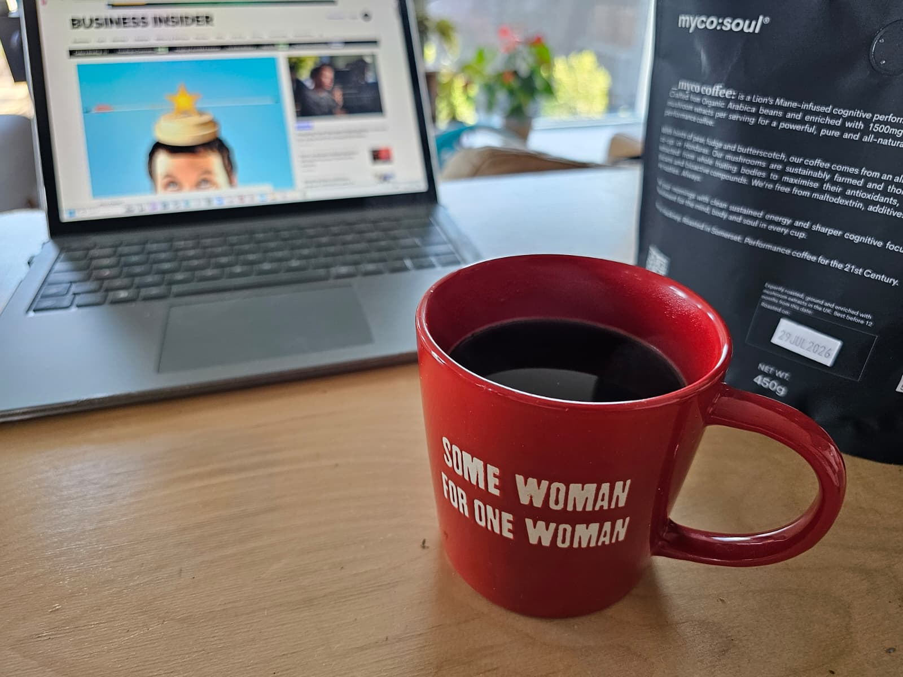

I'll admit my bias upfront: I love coffee. Not caffeine — coffee. The grinding, the bloom, the four minutes of steeping while the kitchen fills with the smell of it. It's the best part of my morning and I've never once wanted to replace it.
Which made the last two years quite annoying, because everyone from my sister to half of my LinkedIn feed kept telling me about mushroom coffee. Lion's Mane for focus. Cordyceps for energy. No jitters, no crash. There's real research here — a 2019 double-blind, placebo-controlled trial found improved cognitive scores after twelve weeks of Lion's Mane supplementation. I was interested. Genuinely.
So I tried it. Three different brands over about four months.
And I hated all of them.

Not the effects — the drink. Every single one was an instant powder. You stir a beige teaspoon of dust into hot water and drink something that tastes like a health food shop smells. The caffeine was so low — 45mg in one case — that I was making a real coffee an hour later anyway, at which point I was just someone drinking two beverages and paying for the privilege.
I'd essentially concluded the category wasn't for people like me.
Then someone pointed out I'd missed one
A friend — the kind who reads ingredient labels for fun — asked why I hadn't tried the one that's actually coffee. I didn't know there was one.

myco:soul is a UK brand doing something structurally different: instead of an instant powder, it's real ground Arabica with Lion's Mane, Chaga and Cordyceps milled directly into the grind. You brew it exactly like normal coffee. Cafetière, V60, espresso — your ritual, unchanged. About 150mg of caffeine per cup, so it is your coffee, not a supplement cosplaying as one.
I ordered a bag of the Cognitive blend, sceptical.
Three weeks in
Week one: the honest surprise was the taste. It's just… good coffee. Smooth, medium roast, no earthiness. If you served it to me blind I'd assume it was a decent single origin. My husband drank it for four days before I told him what it was.

Week two: the mid-morning slump softened. I want to be careful here — this is one person's experience, not a clinical trial — but the pattern I noticed was less about a "hit" and more about the absence of the usual 11am dip. Focus felt steadier through long writing blocks. No jitters, which at 150mg surprised me.
Week three: the real test — I stopped thinking about it. It's just my coffee now. That's the whole trick, I think. Every other functional product I've tried required me to maintain a new habit. This one hijacked a habit I've had for twenty years.
The Scorecard — myco:soul Cognitive
Who this is actually for
If you want to quit caffeine, buy one of the powders — genuinely, they're built for you. But if you're like me — someone who thinks for a living, loves real coffee, and wanted the functional benefits without downgrading the drink — this is, as far as I can tell, the only product in the UK actually built for us.
It's £25 for a starter bag, there's a 60-day money-back guarantee (drink it all, return it anyway if you disagree with me), and over 1,000 reviews at 4.8 stars say I'm not an outlier.